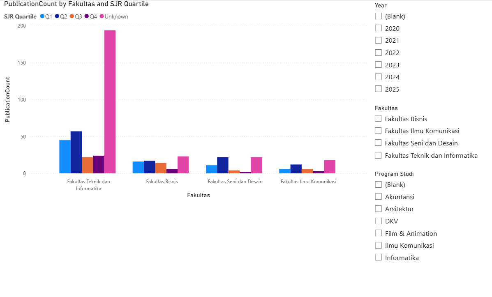
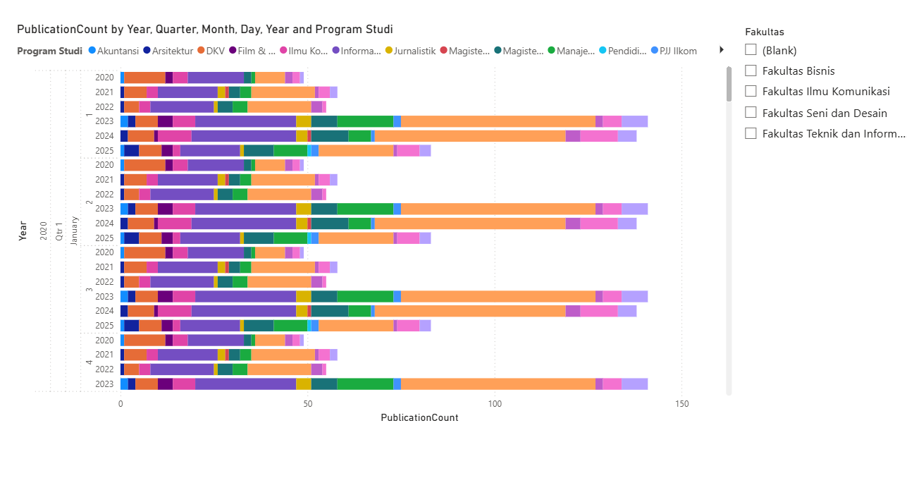
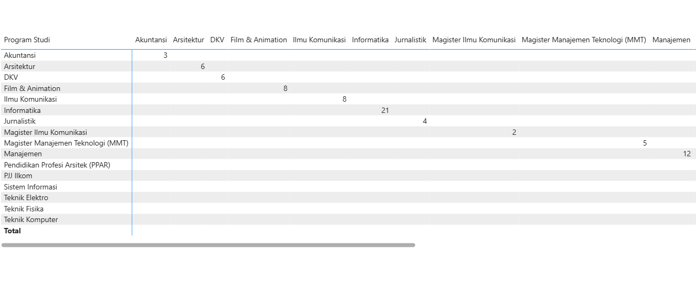
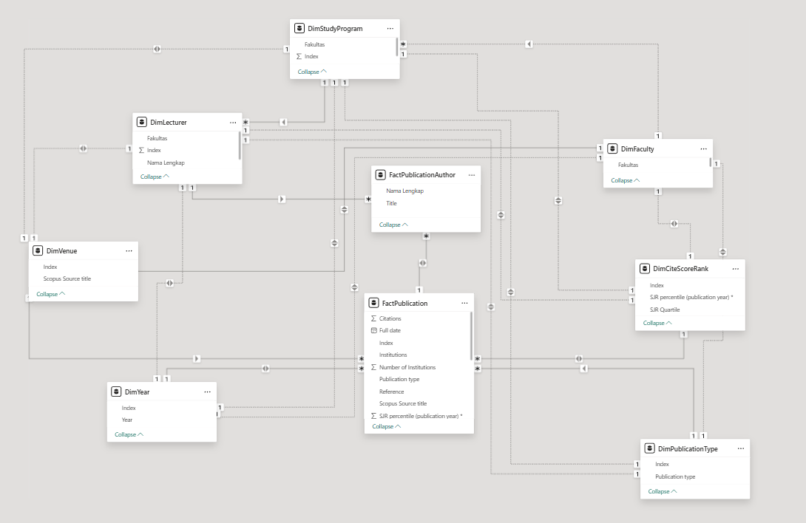

Data Transformation
Used Power Query to prepare and standardize publication data for analysis.
PROJECT 02 · BUSINESS INTELLIGENCE
An academic project focused on organizing and analyzing UMN publication data through data modeling, data transformation, and interactive Power BI reports.
01 / OVERVIEW
This project develops a business intelligence model for exploring UMN publication data. The analysis focuses on publication quartile performance, publication trends across study programs, and collaboration between programs.
PROJECT TYPE
MAIN FOCUS
TOOLS
02 / ANALYTICS
Examines publication counts across faculties and SJR quartiles. Year, faculty, and study program filters help users explore publication performance from different perspectives.

This dashboard compares publication counts across faculties and SJR quartiles. Interactive filters allow users to explore the data by year, faculty, and study program, making it easier to compare publication performance across different academic groups.
03 / TRENDS
Visualizes publication trends across study programs and years, supporting comparisons of publication activity over time.

This visualization presents publication activity across study programs and years. The comparison helps users observe differences in publication volume and explore how publication activity changes over time.
04 / COLLABORATION
Uses a matrix to examine collaboration patterns between study programs through joint publications.

The matrix provides a structured view of publication collaboration between study programs. It helps users examine which academic groups have joint publications and identify potential collaboration patterns.
05 / DATA ARCHITECTURE
The model organizes publication information using fact and dimension tables. This structure supports relationships between publication records, lecturers, study programs, faculties, publication types, and quartile information.

This model illustrates how publication data is organized and connected through fact and dimension tables. These relationships provide a foundation for analyzing publication records by academic program, faculty, lecturer, publication type, and quartile.
06 / IMPLEMENTATION
Used Power Query to prepare and standardize publication data for analysis.
Organized fact and dimension tables to support analytical relationships.
Used DAX measures to support publication counts and quartile-based analysis.
Created report pages for quartile performance, program trends, and collaboration analysis.